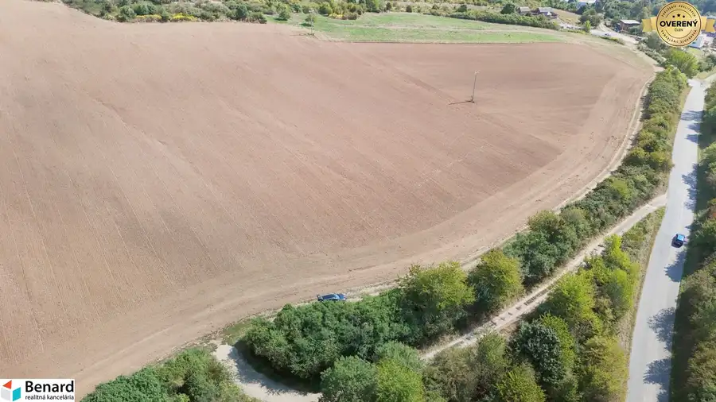
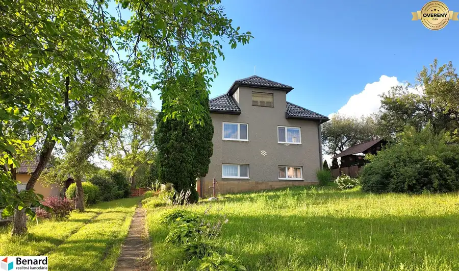
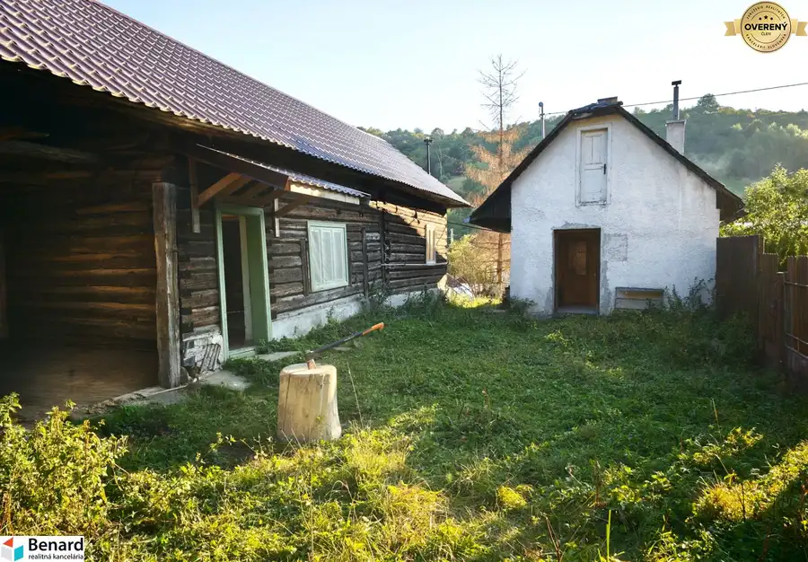
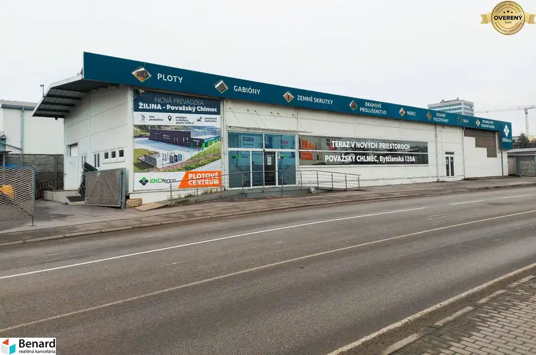

Aktuálna ponuka
8 nehnuteľností, predovšetkým pozemky, developerské projekty, rodinné domy. Každá má vlastnú stránku s fotkami, popisom a mapou.
Prezrieť ponuku
Marek MihaľovRealitný maklér
Realitný maklér · BENARD GROUP, s.r.o.
Predaj a prenájom nehnuteľností · Prešov, Záborské, Nová Kelča

 Pozemok4
Cena dohodouNOVÉ PARCELY určené na IBV! Pozemky Hnevlivá dolina, Prešov
Prešov
600 m²
BENARD REALITY ponúka na predaj pozemky v krásnej novovznikajúcej lokalite v Prešove. Podľa územného plánu mesta je väčšina pozemkov určená na IBV.…
Developerské projekty5
Cena dohodouPozemky vhodné pre developerov, Záborské, Prešov 26 460 m2
Záborské
26460 m²
Z celého pozemku je už približne 9 000 m2 určených na individuálnu bytovú výstavbu (IBV). Zvyšnú plochu je možné upraviť zmenou územného plánu obce.…
Pozemok10
Cena dohodouPozemok pri vode so stav. povolením, domaša, Nová Kelča 2025 m2
Nová Kelča
2025 m²
BENARD REALITY exkluzívne ponúka na predaj lukratívny stavebný pozemok v obci Nová Kelča s projektom a stavebným povolením na 8 luxusných…
Pozemok4
Cena dohodouNOVÉ PARCELY určené na IBV! Pozemky Hnevlivá dolina, Prešov
Prešov
600 m²
BENARD REALITY ponúka na predaj pozemky v krásnej novovznikajúcej lokalite v Prešove. Podľa územného plánu mesta je väčšina pozemkov určená na IBV.…
Developerské projekty5
Cena dohodouPozemky vhodné pre developerov, Záborské, Prešov 26 460 m2
Záborské
26460 m²
Z celého pozemku je už približne 9 000 m2 určených na individuálnu bytovú výstavbu (IBV). Zvyšnú plochu je možné upraviť zmenou územného plánu obce.…
Pozemok10
Cena dohodouPozemok pri vode so stav. povolením, domaša, Nová Kelča 2025 m2
Nová Kelča
2025 m²
BENARD REALITY exkluzívne ponúka na predaj lukratívny stavebný pozemok v obci Nová Kelča s projektom a stavebným povolením na 8 luxusných…
 Chaty a chalupy10
Cena dohodouMurovaná chata so záhradou 586 m2, Bardejov
Bardejov
40 m²
Na pozemku o rozlohe 586 m2 sa nachádza poschodová, čiastočne podpivničená murovaná chata so súpisným číslom a zastavanou plochou 34 m2. Záhrada…
Chaty a chalupy10
Cena dohodouMurovaná chata so záhradou 586 m2, Bardejov
Bardejov
40 m²
Na pozemku o rozlohe 586 m2 sa nachádza poschodová, čiastočne podpivničená murovaná chata so súpisným číslom a zastavanou plochou 34 m2. Záhrada…

Developerské projekty5 Cena dohodou22 542 m2, výnimočný pozemok s Veľkým potenciálom, v. Šariš Veľký Šariš 22542 m² Pozemok s veľkým potenciálom o rozlohe 22 542 m2 nachádzajúci sa pod hradom vo Veľkom Šariši môže byť iba Váš! Krásny južne orientovaný, mierne…
Rodinné domy10 199 000 €Rodinný dom s veľkým pozemkom v obci Tulčík, 2102 m2 Tulčík 5-izbový190 m² Veľký rodinný dom na pokojnej ulici, krásny slnečný pozemok, veľa priestoru na realizovanie Vašich predstáv, výborná dostupnosť do Kapušian (5 km) a…
Rodinné domy10 33 000 €Drevenica / rodinný dom v obci Čirč, 760 m2 Čirč 70 m² Jedno takéto miesto ste práve našli! VIDEO: www.youtube.com/watch?v=eaSlDBGRmbI Drevenica (zapísaná na LV ako rodinný dom) a malý záhradný domček na…
Nebytové priestory8 Cena dohodouPRENÁJOM: Moderná hala (525 m²) v TOP lokalite Žiliny – Kamenná ul. Žilina 525 m² Ponúkame na prenájom moderný obchodno-skladový objekt v najvyhľadávanejšej biznis zóne Žiliny, na ulici Kamenná. Táto novostavba z roku 2014 ponúka…Tomuto výberu zatiaľ nezodpovedá žiadna ponuka. Napíšte mi, čo hľadáte.
Volám sa Mgr. Marek Mihaľov. Som realitný maklér kancelárie BENARD GROUP, s.r.o. a pôsobím predovšetkým v lokalitách Prešov, Záborské, Nová Kelča a Bardejov (Prešovský kraj).
8 nehnuteľností, predovšetkým pozemky, developerské projekty, rodinné domy. Každá má vlastnú stránku s fotkami, popisom a mapou.
Prezrieť ponukuPrešov, Záborské, Nová Kelča, Bardejov, Veľký Šariš a okolie. Ponuku si môžete prezrieť podľa lokality.
Nehnuteľnosti v lokaliteOdhad trhovej ceny, príprava prezentácie, obhliadky, zmluvy a odovzdanie nehnuteľnosti.
Dohodnúť stretnutie
Na čo sa pýtate najčastejšie, skôr než sa stretneme.
Odhad trhovej ceny vychádza z aktuálnych ponúk a predajov v lokalite, nie z cenníkových tabuliek. Podmienky Vám poviem pri prvom telefonáte.
Najprv obhliadka a odhad ceny, potom príprava prezentácie (fotografie, popis, inzercia), obhliadky so záujemcami, rezervačná zmluva, kúpna zmluva, návrh na vklad do katastra a odovzdanie nehnuteľnosti. O každom kroku viete vopred.
Najrýchlejšie cez WhatsApp alebo telefón. Termín stretnutia alebo obhliadky dohodneme podľa Vás.